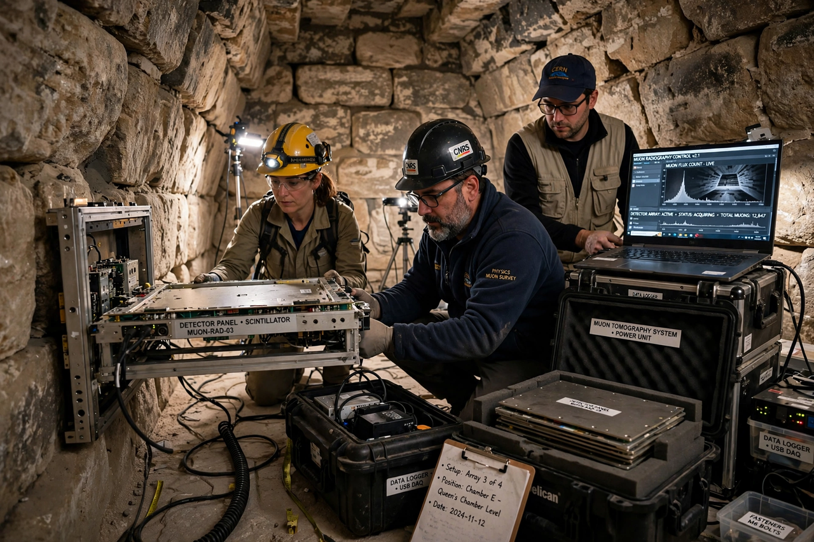

ScanPyramids

| ScanPyramids | |
| Launched | 2015 |
|---|---|
| Coordinator | Heritage Innovation Preservation (HIP) Institute, under the authority of the Egyptian Ministry of Antiquities |
| Methods | Muon radiography (cosmic-ray muons), infrared thermography, photogrammetry, laser scanning |
| Key findings | "Big Void" (2017) and North Face Corridor (confirmed 2023) in Khufu's pyramid |
ScanPyramids is an international scientific mission launched in 2015 to non-invasively explore the internal structures of ancient Egyptian pyramids using advanced imaging techniques, principally cosmic-ray muon radiography (muography). The project brings together Egyptian authorities and research groups from France, Japan and Canada, coordinated by the Heritage Innovation Preservation (HIP) Institute.
- Methodology
- Early results
- The Big Void
- The North Face Corridor
Methodology
Muons are elementary particles produced when cosmic rays strike the upper atmosphere. They rain constantly on the Earth and penetrate hundreds of metres of rock, but are absorbed in proportion to the density and thickness of material they cross. By placing muon detectors — nuclear emulsion films, scintillator telescopes and gas detectors — inside or beneath a pyramid, researchers can build a radiographic image of its interior and detect hidden voids as regions of excess muon flux. The mission combined muography with infrared thermography, drones, photogrammetry and 3D laser scanning to build complete models of the monuments.
Early results
The team surveyed the Bent Pyramid and the Red Pyramid at Dahshur and the Giza pyramids of Khafre and Khufu. In 2016 it reported thermal anomalies on the eastern face of Khufu's pyramid and, more significantly, a muographic anomaly behind the chevron slabs above the original entrance on the north face of the Great Pyramid.
The Big Void
In November 2017 the project announced in Nature the discovery of a large void above the Grand Gallery of the Great Pyramid — the first major internal structure found in the pyramid since the Middle Ages. The "Big Void" is at least 30 metres long, with a cross-section comparable to that of the Grand Gallery itself. Independent confirmation by three different detection technologies gave the result a high statistical confidence. Its purpose remains unknown; Egyptologists have suggested it may be a relieving structure rather than a chamber, and it has not been physically entered.
The North Face Corridor
Further imaging refined the 2016 anomaly behind the north-face chevrons into a corridor-shaped space roughly 9 metres long and 2 metres wide. In 2023 the team, working with Egyptian and German partners, announced that an endoscope inserted through a gap between the chevron stones had visually confirmed the empty corridor, the first direct observation of a new space inside the pyramid.
See also: Great Pyramid of Giza; Grand Gallery, Great Pyramid; Egyptian pyramids.